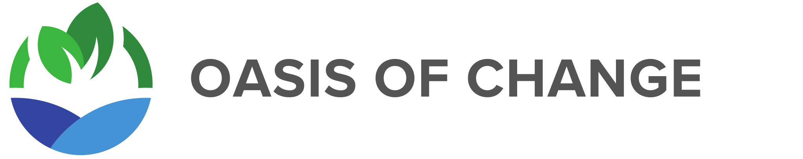

For nonprofits and mission-driven teams
Build a website that’s accessible, sustainable, and grant-ready.
Free guides and checklists for nonprofits: accessibility, sustainability, and tech grants in one place. No paywall, no sign-up required.
Open the hub

The cost of waiting
Every month without accessible, efficient web presence costs you grant eligibility, volunteer hours spent on broken forms, and supporters who bounce because they can’t use your site. The hub is free. The delay isn’t.
What’s inside
Web accessibility
Inaccessible sites turn away donors, volunteers, and people who need your services. They also expose you to legal risk. Get clear, jargon-free guidance so everyone can use your site.
Digital sustainability
Heavy, slow sites waste server energy and frustrate users on slow connections. You pay more in hosting and lose people before the page loads. Learn to trim the fat and speed things up.
Tech grants
Google, Microsoft, Canva, and others give nonprofits millions in free software every year. If you’re not applying, that’s real money and time you’re spending elsewhere for no reason.
Part of Oasis of Change
The Web-Ready Access Hub is an operating subsidiary project of Oasis of Change Inc., a not-for-profit corporation based in Vancouver, Canada.

Guides, checklists, and a recommended path. All in one place.
Open the hub